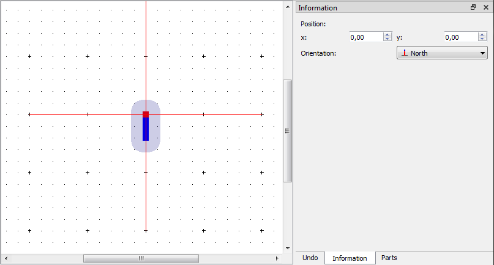

Terminal¶
A terminal is a part from the element that will allow a connection with one conductor during the schema creation.
Create terminal¶
The terminal can only be added to the workspace by the tool bar.
- Select the icon
from the toolbar to add a terminal.
- Click on the initial point from the terminal at the workspace to add the terminal
Note
If the toolbar is not displayed, it can be displayed from Settings > Display > Parts.
Terminal properties¶
The properties from every element part can only be displayed at the properties panel when the part is selected.
Note
If the toolbar is not displayed, it can be displayed from Settings > Display > Information.

Figure: QElectroTech terminal part from element
QElectroTech allows customizing different terminal properties:
| Position: | The coordinates (x, y) from the start point can be defined. |
|---|---|
| Orientation: | The exit direction from the connector to the terminal can be defined. The four possible orientations are North, East, South and West. |